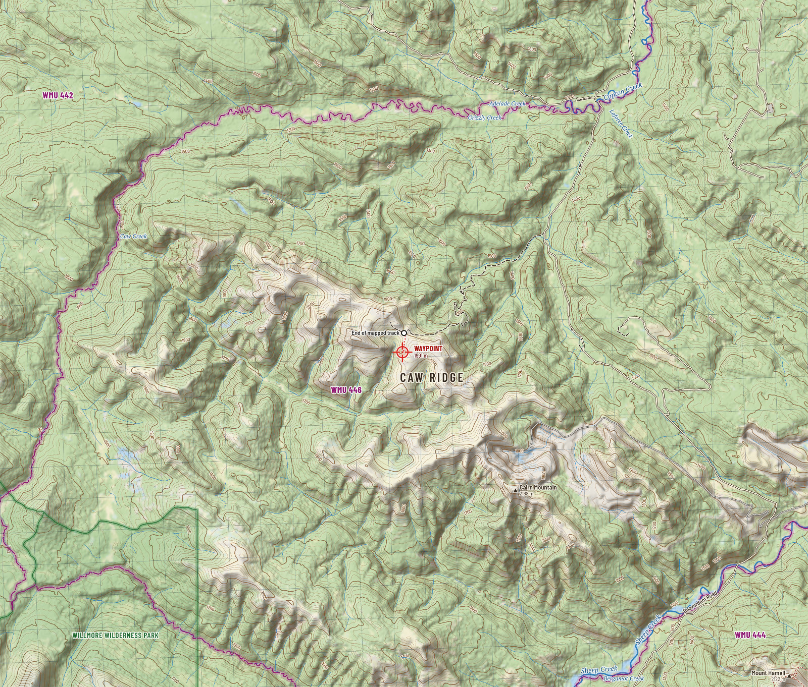

Caw Ridge is a high, open ridge in the foothills 26 km north-west of Grande Cache: alpine tundra and rock above a sea of spruce and pine, the home of the most studied mountain goat herd on earth, and the far end of a rough road. This guide gathers what the public record knows about the ground around your waypoint, draws it as maps, and sets out the rules and the risks.
- Elevation
- 1,991 m6,533 ft. In the alpine: forest gives out near 1940 m.
- Wildlife management unit
- WMU 446Kakwa River. Checked against the official boundary file.
- From Grande Cache
- 49 km by road9 km paved, 31 km gravel, 8 km rough track. 26 km in a straight line.
- Land
- Crown landNot in a park. Inside coal lease 1321020119. Treaty 8 territory.
- Legal light, 28 Sep
- 7:24 to 20:11Sunrise 7:54, sunset 19:41 MDT. Half an hour either side.
- Compass
- 15.6° eastMagnetic declination, autumn 2026. Grid north is 1.9° west of true.
- Coordinates
- 54.062707, -119.390728
11U 343539 E 5993142 N - Latest clear satellite pass
- 2026-09-18No snow on the ridge that day. See the image.
Read this first
- There is no mountain goat season here.WMU 446 has no goat season of any kind. The Caw Ridge goats are a research herd, followed animal by animal since 1989 and not hunted since 1969. Many carry ear tags or collars. Leave them be, and give them room.
- Caribou and grizzly bear are closed everywhere in Alberta.The waypoint is inside the Redrock-Prairie Creek caribou range and the core grizzly recovery zone. Be certain of your target: a caribou is not an elk, and a grizzly is not a black bear.
- Know what your tag allows.In 446, elk must be six point or better, moose in the rifle season is by draw, bighorn sheep is by draw only, and deer are on a general tag. The regulations page has the table.
- No weapon on a quad before noon.In WMUs 400 to 446 it is unlawful to carry a weapon on an off-highway vehicle from one hour before sunrise until noon during an open big game season. The last 8 km to the ridge is an off-highway vehicle trail.
- The road in crosses a working coal mine.Beaverdam Road runs through mine property. The municipal district's instruction is plain: stay on Beaverdam Road. Mine roads are private.
- Your waypoint sits in a bowl.From the waypoint a standing hunter sees only 1.4 km² of ground. Walk 1.2 km to glassing point G1 and you command 6.8 km² of open country. The terrain page shows where to sit.
- Winter comes early at 1991 m.The first snow that stays a while has arrived between late September and late October in most recent years. The forecast when this page was built: 3 cm of snow over the next four days, a low of -4°C and gusts to 66 km/h this week.
- Plan on no phone signal.Coverage is confirmed only in town. Carry a satellite messenger, leave a trip plan, and know that the nearest emergency room is in Grande Cache, 49 km back down the road.
The weather on the ridge
Forecast as of 2026-09-29 04:12 UTC. With a connection this strip refreshes itself.
Highs and lows in °C at 1991 m, wind in km/h. A global model on a coarse grid: ridge top wind will run stronger than shown.
Ten autumns of weather, first snow dates, and sun and moon tables
The ground

In this guide
Maps
Twenty-eight sheets: topographic, satellite, slope, aspect, cover, sun, snow, walking time and what is in view. View, download, print.
Explore
Every sheet laid over the ground in one interactive map, with your GPS position, grid references and bearings. Works offline once saved.
Terrain
Where to glass from, what each spot sees, how steep, which way it faces, and how long the walking takes.
Getting there
The drive from Grande Cache leg by leg, the climb to the ridge, staging, camping, fuel and distances.
Regulations
WMU 446 seasons for 2026, the rules particular to the mountains, licences, registration and who to call.
Wildlife
Goats, sheep, caribou, grizzly, elk, moose and deer: what lives here, what is protected, and when the rut runs.
Weather
Live forecast, the climate of ten autumns at ridge height, first snow by year, legal light for every day to the end of November.
Safety
Bears and meat care, emergency numbers, the hospital, communications, and a packing list that remembers your ticks.
Take it with you
There is no signal on the ridge. Save the guide to your phone before you leave town: every page, every map and the explorer will then open with no connection.

About 120 MB. Use wifi.